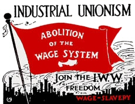

Chapter 7 - Council Meeting in Barbaria
The following also appeared in Lumberjack News when it was published in Eureka, California. It also appeared in Vanguard of New York.
The chief is disturbed. He has heard a lot of rumors about "Progress" among the Red Barbarians up on the hill, so he has decided to call a special meeting of the council. He steps outside, picks up a club and proceeds to beat a tattoo signal on a hollow log. Five minutes later the council members arrive at the thatched hut of the Chief. He bangs his club on a stone slab and the Council comes to order.
 "Fellow Barbarians" he roars: we are met to consider a very graves crisis. Our barbarous way of life is being challenged by these Red barbarians up on the hill. We gotta stopem some place. I hear tell of some strange new weapon that they have and that's why I've called you all together. This weapon is so dangerous that the usual business of war to solve our surplus problem is simply out." Some of the council members applaud this statement, and the chief singles out one of the most vociferous ones for special attention.
"Now Mok," says the Chief, "just how do you propose to get rid of these coconuts, if we dont have a war, or have you thought of that angle?"
"Well" says Mok, "We could do like the Red Barbarians do, and have everyone pick their own coconuts, and that way there wont BE any surplus to worry about."
The chief, angry and red faced, yells. "Guard, come over here and tie up MOK and put him under arrest!" Meanwhile most of the other Council members are eyeing Mok with increasing hate and fear.
"Now then men," roars the chief. "We evidently have a traitor in our midst. A traitor who does not believe in our Barbarous way of life. We are gonna have to deal with this man right now. There being no objections," shouts the chief, glaring around at the council members, "we will now consider ourselves a committee to preserve our Barbarous way of life." Mopping his brow with a palm leaf he sits weakly down. Muttering to himself he says, "This damned lumbago is getting me down so I better have a snort of this elephant juice. Ah, thats better!"
The chief rises and yells, "Guard. Bring the prisoner forward, and somebody go find the Witch Doctor and be sure and tell him to bring all of his Goddam holy charms as we are flat gonna need 'em! Half of the time we can never find that old fool right when we need him the most!"
"While we are waiting, we will just go on with this trial. Just how did you find out about these red Barbarians anyway Mok?"
"Well, it was like this," said Mok. "I was visiting my friend up there, and I saw what they were doing, and I even helped them pick coconuts and it was fun, sort of. Then I even saw their new weapon, and it's a thing they call a 'wheel'."
"What's a wheel," shouts the chief visibly shaken."Well it's a thing they cut out of a stone and its round so it will roll downhill and there is a hole in the middle of it. Now they have two of 'em with a tree run thru the holes and a lot of big stones tied onto that tree trunk so it will roll down hill on us if we start a war."
"Well," says the Chief. "Just what do we do about this? How we gonna be able to keep peace on earth, if they won't let us go to war?"
"First off," says one of the loyal members of the Council, "we have got to take old Mok out and kill him because he is an enemy of us white Barbarians."
"We will settle his hash later, but right now we have to figure out something on this damn wheel. What I can't figure out is this: We, here in Barbaria, White Barbaria, that is, are wonderfully blessed. We have the most Barbarous system yet devised by man and STILL there is an uproar!"
Old Yek gets excited at this point and says, "Chief, it seems that these Red barbarians are no longer calling their system Barbarism, and instead they say they are going to be civilized and call their system 'Civilization'."
"Well," says the chief, "we would show them some 'Civilization' if they didnt have those cussed wheels. Yessir, we would just go up that hill and beat the flyin' hell out of 'em with all these extry coconuts, but it just makes me sick to my stomach every time I think of those wheels. Godlemighty, they would just start them wheels rolling down that hill, and they would roll plumb over us, and it makes my head ache just thinking of those rocks knocking us in the head. Besides that, they would scatter all those nice big piles of coconuts that we worked so hard to get, to hell and gone and everyone would be grabbing them off, and that would not be in the best interests of Barbarism. We just cant have people getting something for nothing."
Then came an interruption as the guard at the door says, "Chief, theses a whole bunch of people out here wants to see you."
"All right," says the Chief, "let a couple of 'em in and I'll see whats on their minds."
The guard lets two in and they approach the Chief who says, "all right you guys whats on your minds?"
"Well," says one of them, "We want some of those coconuts that we piled for you, as we can't find work and our families are hungry."
"Well," says the chief, "seeing as how we got too many coconuts now, why we simply cant put you to work until there is a demand for more, so I guess the answer is no, and," he added , "as we are busy on a plan of defense Ill have to ask you to leave."
The two leave and soon there is a great uproar outside and the cry goes up, "Down with Barbarism," and then the whole crowd rushes the hut, and makes prisoners of the Chief and the council. One of the guys who talked to the Chief moments before tells the chief and the council,
"As of now you guys no longer 'own' the coconut grove, nor the land and this council is hereby dissolved. That way we won't be hungry, nor will we have to fight a war every time there is a surplus of coconuts."
And THAT, my stone-age friends, is the way civilization SHOULD have developed!